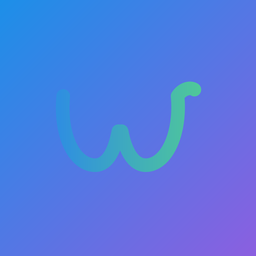
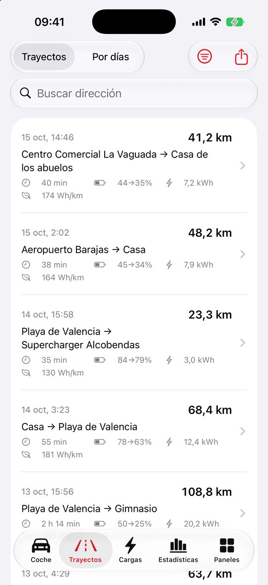
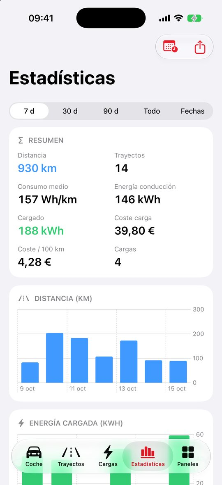
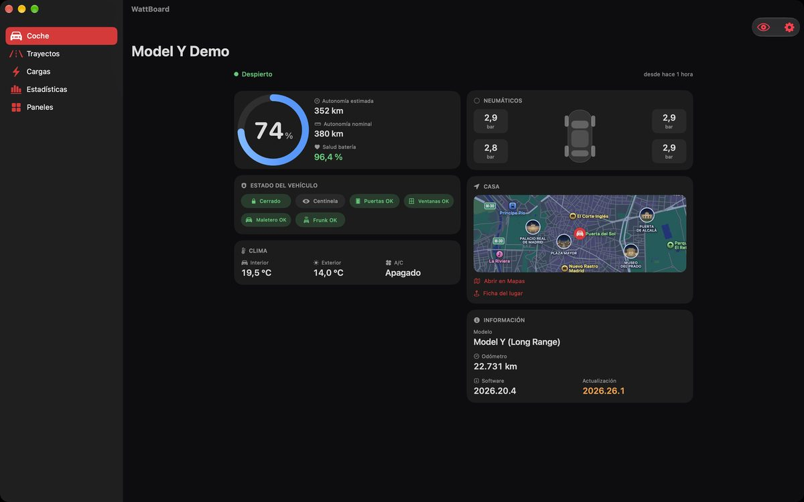

WattBoard
Los datos de tu coche eléctrico, desde tu propio servidor
App Store · iPhone, iPad, Mac y Watch
Google Play · prueba cerrada
7 idiomas
Visor nativo para quien guarda los datos de su coche en un servidor propio (TeslaMate y Grafana). Muestra estado del coche, trayectos, cargas y estadísticas, sin nube, sin cuenta y sin rastreo.
- Qué hice
- La app completa en las cuatro plataformas de Apple con SwiftUI y una versión Android nativa en Jetpack Compose, con widgets, avisos de carga, exportación CSV/GPX y bloqueo con Face ID o huella. Publico versiones nuevas cada pocos días en ambas tiendas.
- Reto técnico
-
- Los paneles de Grafana del usuario se convierten en pantallas nativas (gráficas, tablas, mapas) en lugar de mostrar una web incrustada.
- El dibujo del coche se genera según el modelo, la llanta y el color reales, decodificando los códigos de opción del fabricante.
- En Android, compras verificadas con firma de Google Play, Play Integrity y código ofuscado con R8.
- Tecnologías
- SwiftSwiftUISwift ChartsWidgetKitwatchOSKotlinJetpack ComposeGlancePlay BillingGo


